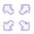

Заголовок поста №1
Повседневная практика показывает, что укрепление и развитие
структуры
тебуют от нас анализа новых предложений.
Веб студия MasterWeb.PRO представляет HTML шаблон "Метро-сайт
v1.0"
Шаблон разработан на основе всем известного Метро стиля для
Windows 8 адаптация произведена с помощью bootstrap v3.2
Выбирая наш шаблон, Вы получаете:
100% Исходные файлы всего шаблона. Ссылка для загрузки будет доступна только Вам

Благодаря bootstrap, вы получаете гибкий дизайн, который легко и быстро "натягивается" на CMS
Благодаря bootstrap, вы получаете гибкий дизайн, который легко и быстро "натягивается" на CMS
1 месяц технической поддержки по любым вопросам, касающимся шаблона или bootstrap